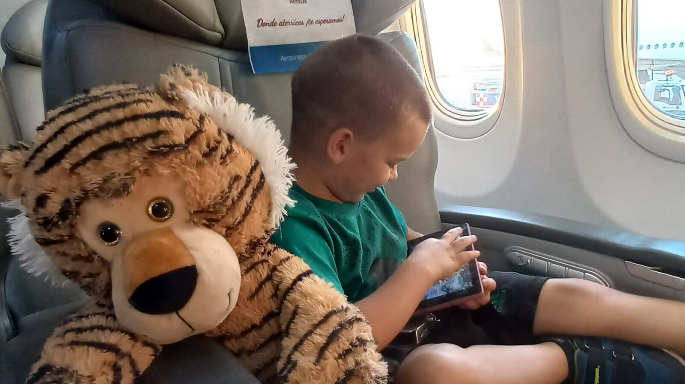

Rethinking Quality of Life for Adults With High Support Needs
A good life does not have to look impressive from the outside. For adults with high support needs, comfort, choice, relationships, dignity, rest, and being known may matter far more than conventional milestones.

What does a good life look like when someone may always need significant help?
That question becomes surprisingly difficult once we stop using the usual adult milestones as our measuring stick.
Employment.
Independent living.
Driving.
Managing money.
Cooking.
Living alone.
Making complex decisions without support.
Those things can absolutely improve quality of life for people who want them and can safely achieve them.
But they cannot be the only way we decide whether adulthood is going well.
For an adult with significant intellectual or developmental disabilities, quality of life may need to be measured differently.
- Is the person comfortable?
- Are they safe without being unnecessarily restricted?
- Are they known by the people around them?
- Do they have meaningful choices?
- Can they communicate preferences, including refusal?
- Do they have relationships?
- Do they get to enjoy things they actually like?
- Can they rest?
- Can they move?
- Can they participate in the world?
- Do they have a home that feels like theirs?
Those questions may tell us far more about a person's life than whether they can perform a conventional list of adult tasks.
High support needs do not make quality of life less important
Sometimes the conversation around disability becomes more clinical as support needs increase.
For someone who can work, date, live semi-independently, and communicate easily, we naturally talk about happiness, belonging, goals, friendships, and personal preference.
For someone who needs assistance with bathing, food, toileting, medication, communication, transportation, or safety, the conversation can narrow.
How many staff?
What diagnoses?
What behaviors?
What medications?
What level of supervision?
What risks?
Those questions matter.
But they are questions about providing support.
They are not a complete description of the life being supported.
A person does not become less entitled to comfort, relationships, privacy, enjoyment, choice, and belonging because their care is more complicated.
If anything, people who depend heavily on others may need us to be more intentional about protecting those things.
Quality of life is multidimensional
Researchers in intellectual and developmental disability have long treated quality of life as broader than physical health or functional independence.
Common quality-of-life frameworks consider areas such as emotional well-being, interpersonal relationships, material well-being, personal development, physical well-being, self-determination, social inclusion, and rights.
That matters because no single outcome tells us whether someone has a good life.
A person can be physically healthy and lonely.
They can be safe and chronically bored.
They can participate in many activities but have almost no control over which activities they attend.
They can live in a beautiful home but have little privacy.
They can become more independent in one task while experiencing more stress overall.
They can require extensive support and still experience strong relationships, comfort, joy, familiarity, and belonging.
Quality of life asks us to look at the whole picture.
We have to be careful about how we measure it
There is a genuine challenge here.
Many quality-of-life tools depend heavily on self-report.
That is important. Whenever someone can describe their own experience, their voice should carry enormous weight.
But what about a person who does not speak?
What about someone who cannot understand an abstract question like, "How satisfied are you with your life?"
What about someone whose communication is primarily behavioral, visual, gestural, or highly contextual?
Researchers sometimes use proxy reports from parents, caregivers, or professionals in these situations.
Proxy reporting can be useful.
It can also be imperfect.
Another person may misunderstand what the resident enjoys.
A parent may value one outcome while the resident appears to prefer another.
A caregiver may mistake quiet contentment for disengagement.
Someone may interpret repetitive movement as a problem when it is actually regulating or pleasurable.
Someone else may assume a smiling person is happy when they are masking discomfort.
So when a person cannot answer a traditional quality-of-life questionnaire, the answer should not be to stop asking about quality of life.
We need to become better observers.
High support needs may require different quality-of-life questions
Recent research reinforces the idea that quality of life may work differently for people with different levels of support need.
A 2025 multicenter study examined 396 adults with intellectual and developmental disabilities and compared people with higher and lower support intensity. The factors associated with quality of life differed between the two groups, leading the researchers to emphasize the importance of personalized care based on individual dependency and support needs.
That is an important caution against creating one universal picture of a successful disabled adult.
The things that improve life for someone who needs occasional support may not be identical to the things that matter most for someone who requires help throughout the day.
We should not lower expectations for dignity or belonging.
We should individualize what those things look like.
A quiet life can still be a good life
The photograph accompanying this article is one of my favorite kinds of pictures of Sam.
Nothing is happening.
We were on an airplane.
He was settled into his seat with his stuffed tiger and looked completely comfortable.
There is no accomplishment in that photograph.
No social interaction.
No educational activity.
No therapy.
No community program.
No evidence of independence.
Just calm.
And calm matters.
We sometimes talk as though quality of life must be visible from the outside.
Trips.
Activities.
Achievements.
Parties.
Work.
Community participation.
Those can all be wonderful.
But for someone whose nervous system is frequently overwhelmed, being able to sit comfortably and feel safe may be enormously valuable.
Rest counts.
Regulation counts.
Familiar objects count.
A day without distress counts.
Peace is not an absence of life. Sometimes peace is one of the best parts of life.
More independence is not always the same as better quality of life
It is easy to assume that every increase in independence must improve quality of life.
Sometimes it does.
Learning to communicate a need independently can be life-changing.
Being able to use the bathroom with less assistance may provide privacy.
Learning to prepare a favorite snack may provide both pleasure and choice.
Using technology to communicate or navigate may open an entirely new world.
Those are meaningful gains.
But the relationship between independence and quality of life is not automatic.
Research involving 370 autistic adults found that receiving support was positively associated with social and environmental quality of life. Relationships also mattered.
The participants were not specifically a sample of people with the highest support needs, so the findings should not be generalized carelessly, but they do demonstrate that support itself is not incompatible with quality of life.
The goal should not be independence for its own sake.
The goal should be greater control, comfort, participation, dignity, and opportunity where those gains actually improve the person's life.
The environment can change quality of life
One of the strongest lessons from disability research is that quality of life is not simply a property inside the individual.
Environment matters.
Support matters.
Housing matters.
Staff practice matters.
Choice matters.
A 2025 longitudinal study followed people with intellectual and developmental disabilities, including people with high support needs, as they moved from institutional settings into community-based homes.
Another longitudinal Canadian study followed adults with severe-to-profound intellectual and developmental disabilities and extensive support needs for four years after moving from an institutional setting into dispersed community group homes.
Research involving adults with extensive support needs has also found improvements in decision-making, participation, independence in daily activities, and quality of life after transition into ordinary community homes, along with reductions in behavioral problems.
None of that means every small home is automatically good or every larger residential setting is automatically bad.
A building cannot guarantee dignity.
But the findings reinforce something important:
The way we organize support can either expand or shrink someone's life.
A house can be community-based and still feel institutional
Moving someone out of a large institution does not automatically solve every problem.
A small house can recreate institutional life.
Everyone wakes at the same time.
Everyone eats at the same time.
Everyone attends the same activity.
Everyone goes on the same outing.
One resident's needs create rules for everyone.
Staff make almost every decision.
Bedrooms look interchangeable.
People are spoken about in front of each other.
Residents are expected to fit the schedule because the schedule makes staffing easier.
Research involving people with intellectual disabilities and extensive support needs living in community settings has documented both positive experiences and continuing restrictions. Participants and families described improved emotional well-being, participation, relationships, and control, but researchers also warned that practices associated with the medical or institutional model can be recreated inside community services.
That is exactly why Casa de SAM's goal cannot simply be to build prettier housing.
We have to think about the life inside the home.
Safety can improve quality of life — or destroy it
Adults with high support needs may require significant safety measures.
Some may wander.
Some may not recognize traffic danger.
Some may climb.
Some may have seizures.
Some may have swallowing risks.
Some may need constant supervision around water, kitchens, medication, or exits.
Those risks are real.
Ignoring them is not respectful.
But safety becomes harmful when every risk produces another blanket restriction.
No going outside.
No kitchen access.
No walking without permission.
No personal belongings that might break.
No late nights.
No choice because choice takes longer.
No community outings because staying home is easier.
Eventually a person can become extremely safe and barely alive in any meaningful sense.
The better question is:
What support or environmental design would make this activity safer without eliminating it?
A protected walking loop may allow someone who wanders to move freely.
A caregiver nearby may make a community outing possible.
Locked medication storage can protect safety without locking every cabinet.
A safe household kitchen can provide food access while protecting specific residents from individual risks.
Safety should expand the life a person can safely live.
It should not become the entire life.
Comfort is not laziness
A strange thing happens when disabled adults receive services.
Ordinary preferences can become clinical problems.
Wanting to sit alone becomes social withdrawal.
Wanting the same food becomes rigidity.
Watching the same movie becomes perseveration.
Taking a nap becomes inactivity.
Pacing becomes behavior.
Declining an activity becomes noncompliance.
Sometimes those patterns really do indicate distress or a health concern.
But sometimes someone simply likes what they like.
Adults without disabilities are allowed enormous amounts of useless comfort.
We watch television.
Scroll our phones.
Take naps.
Rewatch favorite movies.
Order the same meal.
Sit in the same chair.
Avoid parties.
Spend an afternoon doing nothing productive.
A person should not lose permission to have ordinary comforts because they have an intellectual disability.
Quality of life includes the right not to perform happiness
This matters particularly for disability organizations.
It is tempting to prove that a program is successful by showing smiling residents doing activities.
Painting.
Gardening.
Baking.
Dancing.
Attending events.
Those photographs can represent real joy.
They can also create pressure.
Residents should not need to look happy for us.
A resident can have a difficult day in a good home.
They can grieve.
They can be tired.
They can be angry.
They can refuse an activity.
They can want everyone to leave them alone.
They can dislike the outing everyone thought they would love.
They can sit quietly while someone else celebrates.
Quality of life does not mean constant visible happiness.
It means having a life spacious enough to contain both joy and difficulty.
Being known may be one of the most important measures
For adults who cannot easily advocate for themselves, being known becomes protection.
Someone should know:
- how they show pain;
- what fear looks like;
- what calm looks like;
- what foods they reliably eat;
- what noises bother them;
- what routines matter;
- who they trust;
- what they avoid;
- how they say no;
- what helps them recover after overload;
- what objects they seek when they are tired;
- what happens before a behavioral change;
- what makes them laugh;
- what kind of day they enjoy.
That knowledge can prevent suffering that never appears on a formal assessment.
It also protects identity.
A person who cannot tell a new caregiver, "I always listen to this song on my birthday," still deserves for someone to remember.
A person who cannot explain why a particular blanket matters should not lose it because nobody documented the relationship.
A lifelong home should become the keeper of those details.
Relationships remain part of quality of life
People with high support needs may have fewer opportunities to create and maintain relationships without help.
Transportation may depend on someone else.
Communication may require support.
Visits may need planning.
Behavior or sensory needs may make some environments difficult.
That can make relationships fragile.
Research on autistic adults has repeatedly identified social relationships and support as meaningful components of quality of life.
For people with intellectual disability, recent work on residential support also continues to emphasize the role of staff support and everyday participation in quality of life.
But relationships should not be limited to paid caregivers.
Family should remain family.
Friends should be possible.
Faith communities should remain accessible when desired.
Neighbors and familiar community members can matter.
Housemates may become important.
A resident's world should not shrink to whoever happens to be scheduled for the shift.
Choice can be small and still be real
A person may never be able to make every major decision independently.
That does not mean choice disappears.
Choice might mean:
- which shirt;
- which snack;
- which chair;
- which route;
- whether the television is on;
- whether they sit with the group;
- whether they go outside;
- whether they want music;
- whether they want someone nearby;
- whether they want to stop;
- whether today is a bakery day or a bedroom day.
Those choices can look trivial to an outsider.
They are not trivial when almost every major part of your life depends on someone else's help.
The more support a person needs, the easier it is for other people to make every decision simply because it is faster.
Protecting choice requires deliberate effort.
Quality of life should survive aging
A good residential model cannot define quality of life only for young adults.
Residents will age.
Someone who walks easily at 25 may need a wheelchair at 60.
Someone who tolerates noise today may become more sensitive later.
A resident may develop dementia, cancer, seizures, chronic pain, vision loss, swallowing difficulties, or reduced mobility.
Their quality of life may then depend increasingly on comfort, familiar people, pain control, known routines, accessible spaces, family connection, and remaining at home.
Casa de SAM is built around the conviction that increased support needs should not automatically mean losing your home.
The room adapts.
The care adapts.
The person does not have to become easier to remain worthy of belonging.
What you can do this week
Write down what calm looks like
How can you tell when the person is genuinely comfortable?
Body position? Facial expression? Sounds? Movement? Sleep? Appetite? Seeking certain objects or people?
Record it.
Identify three pleasures that require support
Maybe someone has to drive them to the park, prepare a favorite food, set up the television, help them enter a swimming pool, arrange a church visit, or accompany them somewhere they enjoy.
Notice which enjoyable parts of life depend on another person's support.
Look for unnecessary restrictions
Choose one rule or routine and ask why it exists.
Is it protecting this particular person from a real risk?
Or does everyone follow it because it is easier for caregivers?
Record one meaningful refusal
Think of something the person clearly did not want recently.
How did they communicate it?
Was the refusal respected?
If it could not be respected because of health or safety, could the experience have been adapted?
Ask one future caregiver question
Ask a provider or family member:
How would someone new learn what makes this person's life good?
If the answer is only medical records and a care plan, more needs to be preserved.
Long-term questions to consider
- How will we measure quality of life when the person cannot reliably self-report?
- Which observations come from the resident, family, staff, and professionals, and how will disagreements be handled?
- What does calm look like for this person?
- What does distress look like?
- Which pleasures are important enough to protect across adulthood?
- How much choice is available during ordinary routines?
- Which restrictions are truly necessary for safety?
- Can support be redesigned to provide more freedom instead of simply removing risk?
- How will relationships survive staff turnover and family aging?
- What happens if mobility or medical needs increase?
- Can the resident remain at home through ordinary aging?
- Does the environment allow privacy and withdrawal?
- Are activities based on the resident's preferences or on the program's schedule?
- Would we describe this life as good if nobody were watching from the outside?
Casa de SAM's position: a good life does not have to look impressive
When I imagine quality of life for Sam as an adult, I do not imagine a résumé.
I imagine whether he is safe.
Whether people know him.
Whether he gets food he likes.
Whether he can move.
Whether he has familiar routines.
Whether he gets to be around people he enjoys.
Whether someone notices when he hurts.
Whether someone understands his no.
Whether he has places he likes going.
Whether he can rest when he needs rest.
Whether he is surrounded by enough stability that he does not have to continually adapt to someone else's crisis.
And whether he knows, in whatever way he experiences belonging, that this is home.
The airplane photograph makes me think about that.
A calm kid.
A stuffed tiger.
A familiar person nearby.
A body that, for that moment, seems completely at ease.
It is not an extraordinary life moment.
That is why I love it.
Casa de SAM is not being built so that every resident's adulthood looks extraordinary from the outside.
It is being built so their lives can belong to them.
Some days may include the bakery.
Some may include church.
Some may include farm animals.
Some may include friends, visitors, celebrations, music, swimming, travel, or a community outing.
Some days may include almost nothing.
A favorite chair.
A snack.
A familiar movie.
A nap.
A quiet walk.
Someone nearby who knows when to help and when to leave them alone.
That life may require enormous support.
It is still a life.
If the resident is safe, known, respected, connected, comfortable, able to communicate preferences, and able to experience things they genuinely value, then I think we should be very careful before calling it anything less than meaningful.
High support needs do not require a smaller definition of human life. They require a more thoughtful definition of what a good life means.
Sources and further reading
- Research on deinstitutionalization, community living, and quality of life for people with intellectual and developmental disabilities.
- Longitudinal research on quality of life after community transition for adults with severe-to-profound intellectual and developmental disabilities.
- Research on quality-of-life predictors among adults with different levels of intellectual-disability support need.
- Research on quality of life, participation, decision-making, and behavioral outcomes after deinstitutionalization.
- Mason D, McConachie H, Garland D, et al. Predictors of quality of life for autistic adults. Autism Research. 2018.
- Research on community-living experiences of people with intellectual disability and extensive support needs.
- Research on active support and everyday life in group homes.
About Casa de SAM
Casa de SAM is a developing vision for a lifelong residential community in Paraguay for adults with autism and other developmental disabilities who need substantial daily support. The project is being built around one central promise: residents should be safe, known, respected, and able to belong without having to earn their place through productivity or independence.
Casa de SAM is not yet an operating nonprofit or residential provider. We are currently researching, documenting the vision, and looking for people who may eventually help build it responsibly.
This article provides general educational information and describes Casa de SAM's developing philosophy. It is not individualized medical, therapeutic, legal, developmental, or residential-placement advice. Quality of life is individual, and support needs, abilities, communication, health, preferences, and risks differ from person to person.